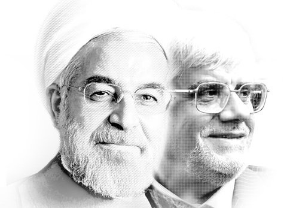

شورای مشاوران خاتمی در بیانیه اعلام حمایت رسمی از حسن روحانی در یازدهمین دوره انتخابات ریاست جمهوری آوردهاند: پس از تشکیل کارگروه های ویژه و انجام گفت و گوهای فشرده با نامزدهای محترم و شخصیت های برجسته ملی به ویژه آقایان هاشمی رفسنجانی و سید محمد خاتمی و اجرای نظرسنجی علمی در نهایت جناب آقای دکتر حسن روحانی به عنوان نامزدی که امکان جذب آراء بیشتری دارد مناسب تشخیص داده شد.
به گزارش خبرنگار مهر، متن کامل بیانیه شماره 4 شورای مشاورین سید محمدخاتمی رئیس جمهوری سابق کشورمان که در دقایق پایانی شامگاه دوشنبه برای خبرگزاری مهر ارسال شد به این شرح است:
به نام خدا
شورای مشورتی اصلاح طلبان که با هدایت و مدیریت حجت الاسلام والمسلمین سید محمد خاتمی از مردادماه سال گذشته تاکنون به طور منظم و مستمر برای بررسی مسائل کشور و راه های برون رفت از بحران ها و تنگناهای موجود به ویژه با بهره گیری از فرصت انتخابات ریاست جمهوری تشکیل شده، تاکنون توانسته است راهبردها و راهکارهای مناسب را در قالب مواضع و بیانیه های مناسب اعلام نماید.
در این روند با توجه به نیازها، مسائل و ضرورت های پیش رو با رأی اجماعی اصلاح طلبان برپایه خرد جمعی به طرح نامزدی یکی از دو شخصیت ملی و مقبول کشور یعنی جناب آقای علی اکبر هاشمی رفسنجانی و جناب آقای سید محمد خاتمی انجامید.
خوشبختانه با اقدام فداکارانه حضرت آیت الله هاشمی رفسنجانی در ثبت نام، جامعه در آستانه امید، اعتماد، شور و نشاط تازه ای قرار گرفت که تحقق حماسه سیاسی شگفتی را نوید داد.
متأسفانه با حذف ایشان از عرصه رقابت های انتخاباتی فرصت های بسیاری برای کشور از دست رفت و موج عظیم اقبال عمومی از ایشان در تحیری سرگردان فرو رفت.
با اعلام تأسف مجدد از این فرصت سوزی و جفا به انقلاب و نظام و مردم، این شورا برای انجام مسؤولیت خود و در جهت کمک به کاهش مخاطرات و نابسامانی های جاری و پاسخگویی به مطالبات گسترده سیاسی جامعه بر آن شد که با رصد مواضع نامزدهای حاضر در صحنه و توجه به خواست و خطر عمومی در زمان مقتضی اعلام نظر نماید.
در میان نامزدهای موجود جناب آقای دکتر عارف به عنوان نامزد اصلاح طلب و جناب آقای دکتر حسن روحانی به عنوان نامزد مستقل مورد نظر بودند.
در این شرایط مهم ترین سرمایه اجتماعی اصلاح طلبان حفظ و تداوم اجماع به وجود آمده بود که اکنون به ظرفیت ملی فراگیری مرکب از تمامی تحول خواهان، اصلاح طلبان و اصول گرایان معتدل و دلسوز کشور تبدیل شده و یک تقاضای اجتماعی پردامنه را برای اثر بخشی بر سرنوشت انتخابات به رغم همه محدودیت ها و نگرانی ها به دنبال داشته است. بر این اساس حداقل ائتلاف میان این دو نامزد محترم برای جلوگیری از تفرق آرا و حفظ انسجام و همگرایی جریان های خیرخواه کشور به عنوان یک خواسته همگانی و ملی در همه سطوح مطرح شده است.
به این منظور شورای مشاوران نیز راهکارها و ساز و کارهای انجام ائتلاف را با تأکید بر مراجعه به افکار عمومی با توافق آقایان دکتر عارف و دکتر روحانی در دستور کار قرار داد که مورد قبول بزرگان نیز بوده است. در این روند با تشکیل کارگروه های ویژه و انجام گفت و گوهای فشرده با نامزدهای محترم و شخصیت های برجسته ملی به ویژه آقایان هاشمی رفسنجانی و سید محمد خاتمی و اجرای نظرسنجی علمی در نهایت جناب آقای دکتر حسن روحانی به عنوان نامزدی که امکان جذب آراء بیشتری دارد مناسب تشخیص داده شد.
ضمن سپاس فراوان از جناب آقاى دكتر عارف كه شجاعانه و بيدارگرانه در عرصه حضور داشتند و بيانگر مواضع ارزنده اصلاح طلبان بودند و در اين موقعيت حساس و به منظور جلوگيرى از تفرقه و پراكندگى نيروها، اخلاق و مصلحت جمعى را بر همه چيز ديگر ترجيح مى دهند، اعلام مى نمايد كه نامزد واحد ما درعرصه انتخابات جناب آقاى دكتر روحانى خواهد بود.
این شورا با تأکید مجدد بر شایستگی ها و توانمندی های جناب آقای دکتر محمدرضا عارف به عنوان دانشمندی اصلاح طلب و مدیری توانا در اعلام مواضع اصلاح طلبانه ارج می نهد و از جناب آقای دکتر روحانی نیز انتظار دارد شجاعانه در تحقق راهبرد عقلانیت، تدبیر و ثبات که همواره مورد تأکید ایشان بوده است گام بردارند و از هم میهنان عزیز دعوت می نماید با احساس مسؤولیت بیشتر نسبت به شرایط خطیر کنونی و پشتیبانی از جناب آقای دکتر حسن روحانی و رأی به ایشان نقش خویش را در کمک به برون رفت کشور از تنگناهای موجود ایفا نمایند.
والسلام
دوشنبه 20 خرداد 1392